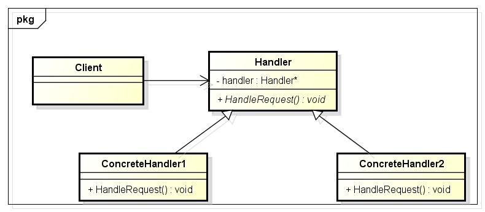

职责链模式
1 什么是职责链模式？
在GOF的《设计模式:可复用面向对象软件的基础》一书中对职责链模式是这样说的：使多个对象都有机会处理请求，从而避免请求的发送者和接收者之间的耦合关系。将这些对象连成一条链，直到有一个对象处理它为止；如下图：

对于每个角色，他们都有他们的职责；当我提交了休假申请时，项目经理需要判断，看看自己能否处理，如果休假超过了2 个小时，那么项目经理就不能处理了；项目经理将这个请求提交到项目主管，项目主管判断部门经理在不在，如果部门经理在，项目主管就不能处理了；最后，我的休假申请就到了部门经理那里了，由他亲自审批。可以很明显的看到，项目经理、项目主管和部门经理都有可能处理我的休假申请，我的请求沿着这条链一直走下去，直到有人处理了我的请求。
2 UML类图
Handler：定义了一个处理请求的接口；其它类如果需要处理相同的请求，可以实现该接口就好了；
ConcreteHandler：处理它所负责的请求，如果可处理该请求，就处理掉这个请求；否则将该请求转发给它的下一个可以处理该请求的对象，所以它必须能访问它的下一个可以处理同样请求的对象；
Client：向处理对象提出具体的请求。
当客户提交一个请求时，请求沿着一条链传递，直至有一个ConcreteHandler对象负责处理它。
3 使用场合
有多个的对象可以处理一个请求，由哪个对象处理该请求是在运行时刻自动确定的；
如果想在不明确指定接收者的情况下，向多个对象中的一个提交一个请求；
可以处理一个请求的对象集合应被动态指定。
4 代码实现

1 #include <iostream> 2 using namespace std; 3 4 #define SAFE_DELETE(p) if (p) { delete p; p = NULL; } 5 6 class HolidayRequest 7 { 8 public: 9 HolidayRequest(int hour) : m_iHour(hour){} 10 int GetHour() { return m_iHour; } 11 private: 12 int m_iHour; 13 }; 14 15 // The holiday request handler interface 16 class Manager 17 { 18 public: 19 virtual bool HandleRequest(HolidayRequest *pRequest) = 0; 20 }; 21 22 // Project manager 23 class PM : public Manager 24 { 25 public: 26 PM(Manager *handler) : m_pHandler(handler){} 27 bool HandleRequest(HolidayRequest *pRequest) 28 { 29 if (pRequest->GetHour() <= 2 || m_pHandler == NULL) 30 { 31 cout<<"PM said:OK."<<endl; 32 return true; 33 } 34 return m_pHandler->HandleRequest(pRequest); 35 } 36 private: 37 Manager *m_pHandler; 38 }; 39 40 // Department manager 41 class DM : public Manager 42 { 43 public: 44 DM(Manager *handler) : m_pHandler(handler){} 45 bool HandleRequest(HolidayRequest *pRequest) 46 { 47 cout<<"DM said:OK."<<endl; 48 return true; 49 } 50 51 // The department manager is in? 52 bool IsIn() 53 { 54 return true; 55 } 56 private: 57 Manager *m_pHandler; 58 }; 59 60 // Project supervisor 61 class PS : public Manager 62 { 63 public: 64 PS(Manager *handler) : m_pHandler(handler){} 65 bool HandleRequest(HolidayRequest *pRequest) 66 { 67 DM *pDM = dynamic_cast<DM *>(m_pHandler); 68 if (pDM != NULL) 69 { 70 if (pDM->IsIn()) 71 { 72 return pDM->HandleRequest(pRequest); 73 } 74 } 75 cout<<"PS said:OK."<<endl; 76 return true; 77 } 78 private: 79 Manager *m_pHandler; 80 }; 81 int main() 82 { 83 DM *pDM = new DM(NULL); 84 PS *pPS = new PS(pDM); 85 PM *pPM = new PM(pPS); 86 HolidayRequest *pHolidayRequest = new HolidayRequest(10); 87 pPM->HandleRequest(pHolidayRequest); 88 SAFE_DELETE(pHolidayRequest); 89 90 pHolidayRequest = new HolidayRequest(2); 91 pPM->HandleRequest(pHolidayRequest); 92 93 SAFE_DELETE(pDM); 94 SAFE_DELETE(pPS); 95 SAFE_DELETE(pPM); 96 SAFE_DELETE(pHolidayRequest); 97 }
output:
DM said:OK. PM said:OK.
5 优缺点
降低耦合度；职责链模式使得一个对象不用知道是哪一个对象处理它的请求。对象仅需要知道该请求会被正确的处理。接收者和发送者都没有对方的明确的信息，且链中的对象不需要知道链的结构；
增强了给对象指派职责的灵活性；当在对象中分派职责时，职责链给你更多的灵活性。你可以通过在运行时对该链进行动态的增加或修改来增加或改变处理一个请求的那些职责；
不保证被接受，既然一个请求没有明确的接收者，那么就不能保证它一定会被处理；该请求可能一直到链的末端都得不到处理。一个请求也可能因该链没有被正确配置而得不到处理。
6 总结
职责链模式在实现时，需要处理好它的后继者的问题，就是说，如果我不处理这个请求，那么我将把这个请求发给谁去处理呢？同时，职责链模式在实现时，它的链的形状并不是由职责链本身建立和维护的，而是由客户进行创建的，由客户指定每一个处理者的后继者是谁。这就大大的提高了职责链的灵活性。在实际中，我们也可以将职责链模式与组合模式相结合，一个构件的父构件可以作为它的后继者。
本页共20段，1304个字符，3362 Byte(字节)